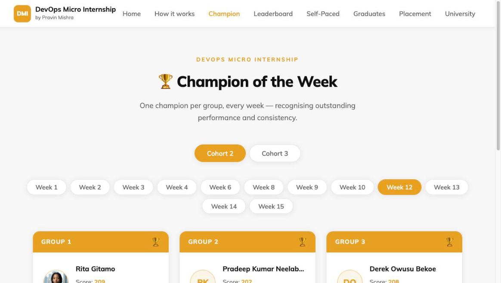
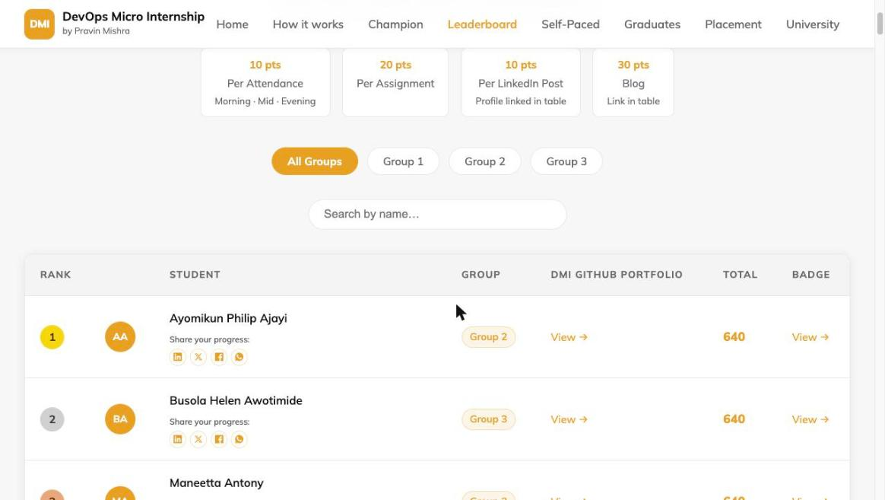
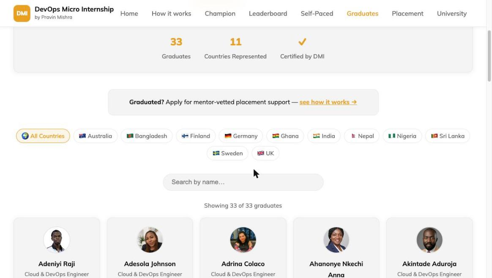

What Is a DevOps Micro Internship?
Search "learn DevOps" and you'll get the same answer a hundred times over: watch a course, get a certificate, add it to your resume. That's the model almost every online course platform and bootcamp runs on — watch, absorb, certify. It's also the model that produces engineers who can talk about Kubernetes in an interview and then freeze the first time they have to actually debug a failing pod in production.
The DevOps Micro Internship — DMI — is built differently, and the name is deliberate. It's not a course. It's a micro internship: a structured, time-boxed program with weekly deliverables, real deadlines, mentor reviews, and a public record of what you actually did. You don't watch DevOps. You do it, in your own GitHub repository, and a review system grades your real work every single week.
The problem with how most people learn DevOps
Certificates have a trust problem, and everyone in hiring already knows it. A completion certificate proves you finished watching something — it says nothing about whether you can actually do the work. Any hiring manager who has interviewed a few hundred "certified" candidates has felt this gap directly: someone who can recite the seven-layer OSI model but has never actually broken and fixed a real deployment.
Practice-first platforms try to close that gap with labs and sandboxes, and that's a real improvement — but the work still usually disappears into a private dashboard. Nobody outside the platform can see it. The proof of your skill exists, but only you and the platform know that.
DMI starts from a different premise: if the whole point is proving you can do the work, then the proof has to be public, verifiable, and outside our control — not a badge we hand out, but a trail of real commits, real graded checks, and a public profile anyone can click through.
What "micro internship" actually means
An internship has a shape a course doesn't: you're assigned real work, on a schedule, and someone reviews what you produce. DMI keeps that shape and compresses it into weekly cycles instead of a single multi-month placement — hence "micro." Concretely, that means:
- Weekly deliverables. Every week has real assignments due by a real deadline — not "whenever you get to it."
- Mentor review. Co-mentors run live sessions, answer questions in Discord, and review submissions — not just an autoplay video queue.
- A leaderboard. Your progress is ranked against everyone else's, visible to you and to the community, not hidden in a private "my progress" tab.
- A capstone. The program ends with a final project you build and can point to, not a quiz you pass.
That structure is the whole reason DMI can call itself an internship and mean it. A video library with a certificate at the end can't do any of those four things.
How the weekly loop actually works
Every week of DMI runs on the same rhythm, whether you're in the live cohort or going at your own pace:
- Live session day (Live cohort) — a session covering the week's topic, taught with theory and hands-on demos, followed by peer review and a Champion of the Week callout.
- Self-study day — rewatch, take notes, and start the week's assignment in your own fork of the DMI template repository.
- Execution days — build the actual assignments. Real files, real commits, your repo. Co-mentors help live in the evenings; Discord covers everything else.
- Deadline day — push your finished work by end of day. It lives in public on GitHub. That's not incidental — it's the point. Your work becomes evidence, not just a submission.
- Every day, automated review. A review agent checks every file in your fork against that week's checklist and updates your public badge page and the leaderboard — daily, not just once at the end of the week.
- Every week, you publish. A LinkedIn post and a blog post about what you built are part of the grade, not optional extras — they're what turns "I did this assignment" into a public, searchable record.
Self-Paced students follow the identical loop — same assignments, same daily automated grading — just without the fixed live-session schedule. See the full breakdown, including the exact points table, on the How DMI Works page.

The part nobody else has: public, verifiable proof
This is the actual differentiator, and it's worth being explicit about why it matters. Every DMI student — Live or Self-Paced — gets a public profile page showing exactly which weeks they completed, which automated checks passed, and links to the LinkedIn and blog posts they published along the way. The leaderboard is generated straight from that graded data, not from anyone's self-report.
A hiring manager doesn't have to take a certificate's word for it. They can open a graduate's badge page, see fourteen weeks of graded work, click through to the actual GitHub fork, and read the actual Terraform, the actual Kubernetes manifests, the actual CI/CD pipeline. No certificate mill can fake that, because there's nothing to fake — the proof is the work itself, sitting in a public repository with a timestamped grading history attached to it.
Put plainly: don't tell an employer you know Terraform. Show them your graded Week 8.

Learning DevOps with AI, from week one
Most DevOps curricula treat AI tools as an afterthought — something you bolt on once you already know the fundamentals. DMI does the opposite. Week 2 of the program is Agentic AI, using Claude Code — before Linux, before Git, before any of the traditional prerequisites. The reasoning is straightforward: the DevOps engineers getting hired in 2026 are the ones who can work alongside AI tools productively from day one, not the ones who learned every fundamental first and are now retrofitting AI into an old workflow. DMI teaches you to build with AI as a working method from the very start, not a topic covered in week 12 as an afterthought. See exactly what that week covers — the Agentic Loop, Claude.md, Skills, Subagents, and MCP — in why DMI teaches Claude Code before Linux or Git.
The 14-week curriculum
The program runs week 00 through week 13, ending in a final project and graduation:
- Internet & Networking
- Success Mindset
- Agentic AI
- Linux & Bash for DevOps
- Git & GitHub
- DevOps Lifecycle & Agile
- AWS Cloud
- Azure Cloud
- Terraform
- Ansible
- Azure DevOps (CI/CD)
- Docker
- Kubernetes
- Final Project
Every week pairs theory with a hands-on assignment graded against a real checklist — no week is "watch this video and move on."
Who teaches it
Pravin Mishra leads the program — 15+ years in cloud and DevOps consulting, an AWS Authorized Instructor, and the author of three cloud books including Cloud Computing with AWS. But the more interesting detail is who teaches alongside him: DMI's co-mentors are former DMI students themselves. Anjana Muthunayake, DMI's lead co-mentor, came up through the program before taking on that role, and the same is true of the rest of the co-mentor team. The program produces its own teaching staff — which means every co-mentor can tell you, from direct experience, exactly what it feels like to be on the other side of the assignment you're stuck on.
Three ways to do DMI
DMI isn't one fixed product — it's a ladder, and where you start depends on how much time and structure you want:
- Foundation — the entry point. Weeks 00–02 (Networking, Mindset, Agentic AI), fully graded, a low-commitment way to feel the weekly loop before going further.
- Self-Paced Engineer — the full 14-week curriculum, self-paced, with the same automated daily grading and a public badge page. No live sessions, no fixed schedule — you set the pace.
- Live Internship — the full program with live weekly sessions, direct mentor review, a cohort leaderboard, and a capstone demo day. Selective and cohort-based, not open enrollment.
Pricing, current cohort dates, and enrollment all live in one place — the DMI University storefront, so what you see there is always current, unlike anything restated here.
How selective is the Live track, really?
Selectivity at DMI isn't marketing language — it's a real number, cohort over cohort. Cohort 2 had 988 people register; 271 were selected. Cohort 3 had 1,421 register, 309 completed and submitted the graded entrance assignment, and 182 made it through the interview. The bar is public on purpose: DMI publishes the leaderboard and badge pages for exactly the same reason it keeps the Live track selective — the whole model depends on "DMI graduate" actually meaning something specific and verifiable, not a label anyone can buy.

What happens after you graduate
Graduating from DMI isn't the end of the relationship. Graduates who keep building afterward — and who a mentor panel would personally vouch for — can apply for DMI's graduate placement support: real outreach to companies on their behalf, done by DMI's own team, not a job-board listing. It's deliberately not a guarantee and not something enrollment buys — full details, including exactly how the process works, are on that page.
Frequently asked questions
Is DMI a certificate program?
Foundation and Self-Paced both include a completion certificate, but the certificate isn't the point — it links back to your public badge page, so anyone checking it can verify the actual graded work behind it, not just the piece of paper.
Do I need prior DevOps experience to start?
No. The program is built to take you from Foundation (Internet & Networking, the absolute basics) through to Kubernetes and CI/CD over the full 14 weeks. Week 2's Agentic AI content is designed to be a genuine starting point, not a stretch goal.
What's the difference between Self-Paced and Live?
The curriculum and the automated grading are identical. Live adds scheduled weekly sessions, direct mentor review, a cohort leaderboard, and a capstone demo day — and it's selective, cohort-based enrollment rather than open, ongoing enrollment.
How is my work actually graded?
An automated review agent checks every file in your GitHub fork against that week's checklist — daily, not just at a deadline — and the result updates your public badge page and the leaderboard. See the full scoring breakdown on the How DMI Works page.
Ready to see what a graded week actually looks like? Start with DMI Self-Paced →